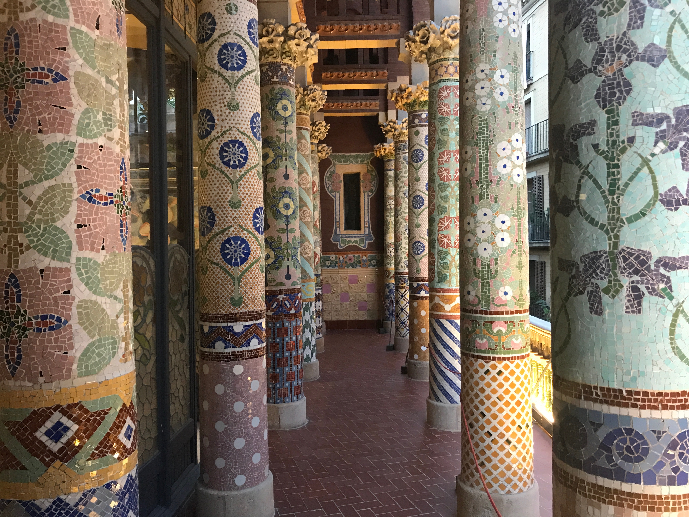
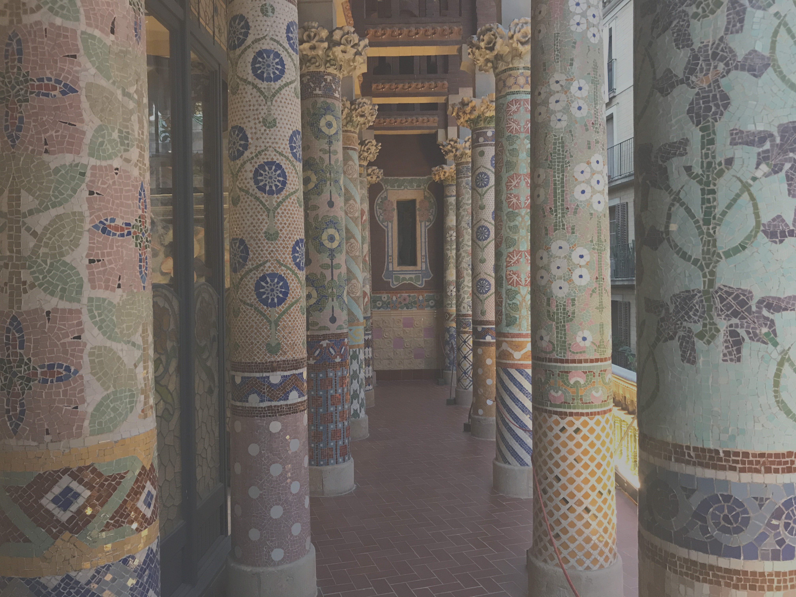
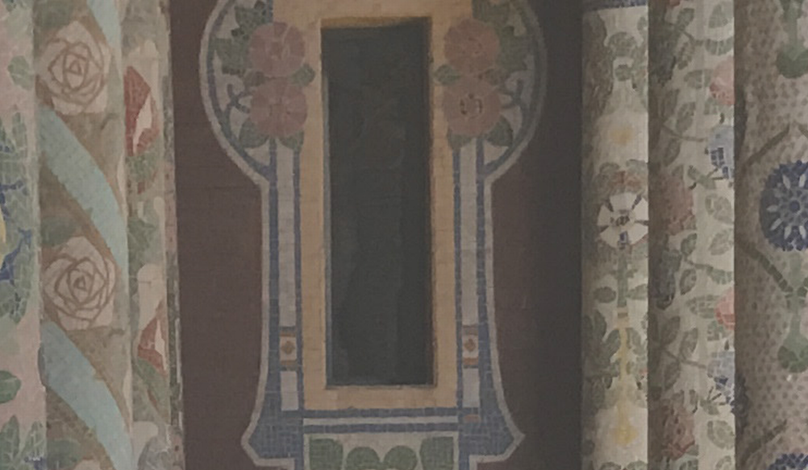

PRUEBAS IMAGENES GRANDES
Aplicando contraste con Photoshop a "-50", guardandolo con calidad alta (10) y con CSS modificando brillo y contraste. Conseguiriamos reducir considerablemente su tamaño y perder poca calidad.
A continuación voy a mostrar la diferencia entre la imagen original que es la de la izquierda y la modificada que es la de la derecha:
Imagen de prueba
- 
- 
El filtro aplicado a la imagen modificada es: "filter: contrast(1.75) brightness(1.2);", a parte de el contraste de Photoshop. Con esto se reduce el tamaño de: 3,06 MB (3.216.227 bytes) a 2,25 MB (2.360.050 bytes).
Imagen fondo pinturas

El filtro aplicado a la imagen modificada es: "filter: contrast(1.75) brightness(1.2);", a parte de el contraste de Photoshop. Con esto se reduce el tamaño de: 7,23 MB (7.584.095 bytes) a 1,72 MB (1.813.977 bytes).
Zoom de las imagenes
Al ampliar las imagenes no se pierde a penas resolucion, debido a que la imagen no se escala, si no se cambia el el brillo y contraste. La imagen de la izquierda es la original y la de la derecha la modificada. Con la imagen de fondo de pinturas, pasa exactamente igual.
- 
Tabla comparativa
| Name | Status | Type | Initiator | Size | Time(approximately) |
|---|---|---|---|---|---|
| Img1 | Finished | jpeg | prueba.html | 3,06 MB | 267 ms |
| Img1modify | Finished | jpeg | prueba.html | 2,25 MB | 108 ms |
| fondoColores | Finished | jpeg | prueba.html | 7,23 MB | 321 ms |
| fondoColoresModify | Finished | jpeg | prueba.html | 1,72 MB | 83 ms |